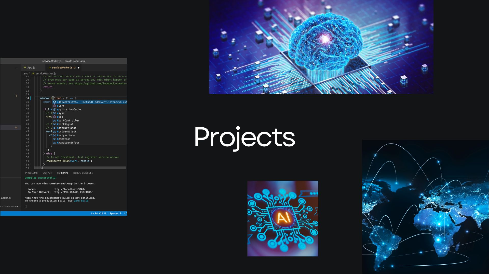

Highlighted Work

1) Three-Page HTML5 Website
This site is a structure-first project built with semantic HTML only. The goal is to practice clean document structure, navigation, and meaningful content without relying on CSS.
- Uses semantic elements like header, nav, main, article, and section
- Includes working links between all pages
- Published using GitHub Pages
2) Cybersecurity Learning Notes
I’m building a set of written notes that explain security concepts in plain language. The goal is to practice communication skills that are important in Sales Engineering.
- Key terms and short definitions
- Real examples (phishing, MFA, password hygiene)
- Reflections on what I found confusing and how I resolved it
3) Networking Practice and Subnetting Drills
I’m practicing networking fundamentals and subnetting problems to strengthen my technical foundation for cybersecurity work.
- IP addressing and subnet masks
- Basic routing and switching concepts
- Troubleshooting mindset: identify, test, and verify
Project Overview Table
| Project | Focus Area | Status |
|---|---|---|
| Three-Page HTML5 Website | Web Development | Completed |
| Cybersecurity Learning Notes | Technical Writing | In Progress |
| Networking Practice | Technical Skills | Ongoing |